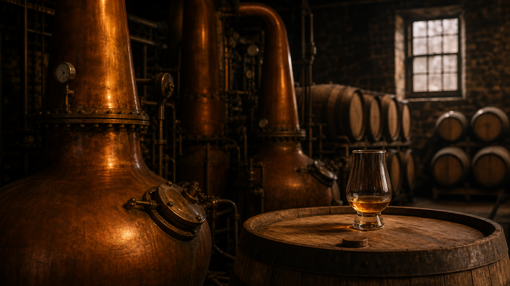

TATSURO
Speyside / Small Distillery / Premium Whisky
時を飲む
余韻が、残る。
00 / Time
時を飲む
ウイスキーは、樽に預けたところで終わる。
あとは、土地と時間が仕上げる。
TATSUROは、その変化だけを見つめたウイスキーです。
01 / Land
Speyside
霧の谷
冷たい湿り気が、麦芽の輪郭をやわらかくする。
石造りの蒸留所に朝が降りるころ、空気はまだ言葉を持たない。
ここでは、派手な主張よりも、地形と気温そのものが味の一部になる。
02 / Craft
蒸留所 / 樽 / 熟成
手間が骨格を作る
蒸留所は火を急がせない。
樽は木目の呼吸を残し、
熟成庫では時間が余計なものを削る。
- 蒸留所
- 蒸気、銅の熱、朝の音。
小さな現場の精度が、そのまま味になる。 - 樽
- 焦がした木肌と呼吸する内壁が、
甘さに奥行きを与える。 - 熟成
- 急がず、揺らさず、待つ。
待つことそのものが、骨格になる。

03 / Taste
香り / 味 / 余韻
まず香りが立ち
最後に余韻が残る
香り
洋梨、蜂蜜、乾いた木肌。
ひと呼吸で広がるのに、重すぎない。
味
麦芽の甘さに、オークとわずかなスパイス。
口当たりはやわらかい。
余韻
長く続くのに、主張しない。
飲んだあとに、空気だけが整う。
04 / Philosophy
なぜ作ったのか
時の魔法を味わえる酒をつくりたかった
飲み終えたあとに消える酒ではなく、
飲んだあとに空気の温度が少し変わる酒。
TATSUROは、そんな一本を目指して生まれた。
つくる側ができるのは、蒸留して、樽に預けて、見守るところまで。
そのあとは、時間と土地が仕上げる。
05 / CTA
案内を受け取る
必要な情報を
受け取る
限定ボトル、試飲会、ブランドの便りをメールで受け取れます。
必要な案内だけを、必要な回数だけ。
20歳未満の飲酒は法律で禁止されています。飲酒運転は絶対にやめましょう。